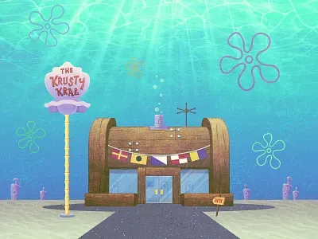
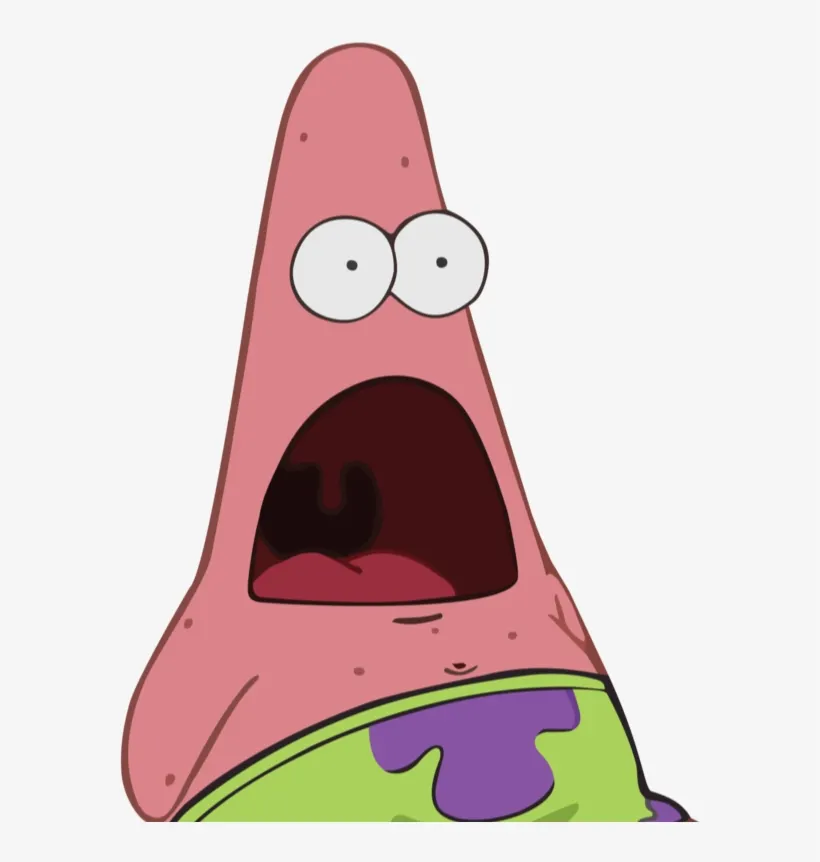
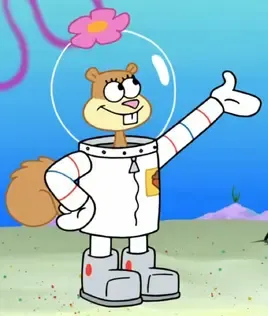
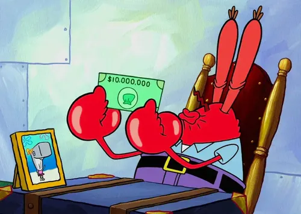
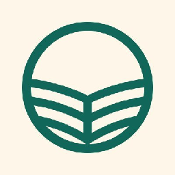
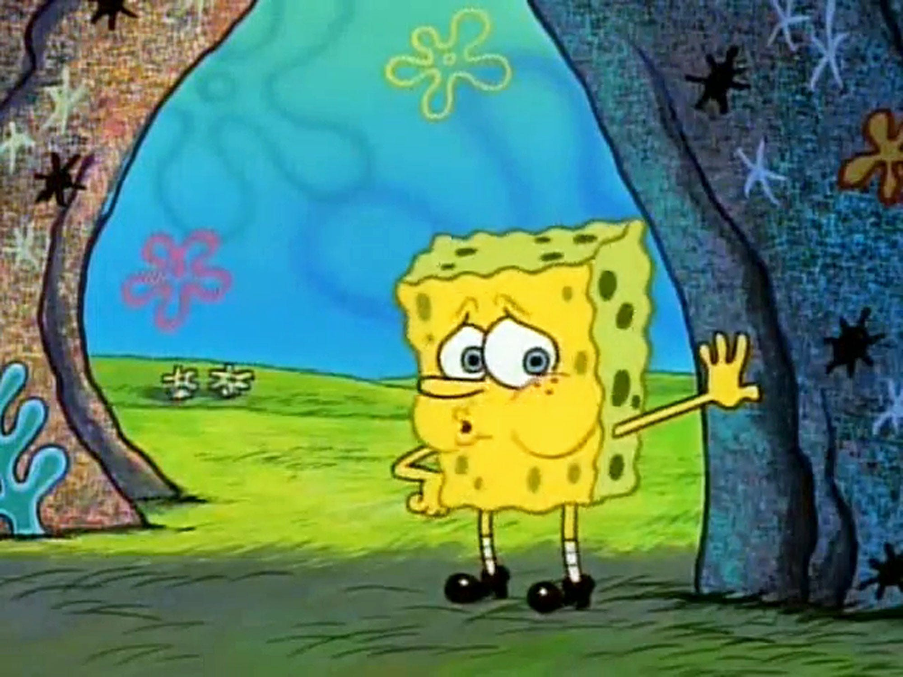
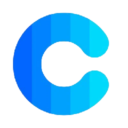
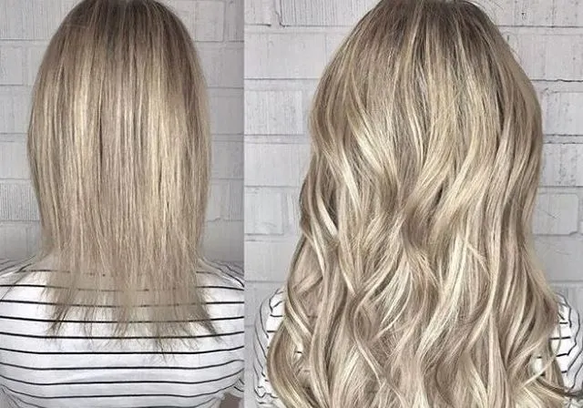

Krusty Krab
C'est là ou je travaille en tant que cuisinier. Je cuisine les pâtés de Krab
Une liste d'outils gratuits pour concevoir un site web, surtout du côté du design : de quoi trouver des idées, choisir des couleurs et une police, puis remplir la page.

C'est là ou je travaille en tant que cuisinier. Je cuisine les pâtés de Krab

C'est mon meilleur ami et mon voisin.

C'est une amie qui vient de la surface, du Texas plus précisément.

C'est lui qui m'a donné mon travail. Il est le directeur du Krusty Krab.

Une galerie de pages d'accueil de vrais sites, rangées par secteur d'activité et par style.

Une galerie de pages d'accueil, avec en prime des maquettes et des polices réutilisables.

Après une bonne inspiration, il est important de bien souffler... sinon on meurt

Génère une palette de cinq couleurs à la barre d'espace, et verrouille celles qu'on veut garder.

Une bibliothèque de polices libres, un peu comme la police en zone libre durant la 2nd guerre mondiale, que l'on relie à sa page en une ligne , sans rien télécharger.
Très grand catalogue d'icônes, en SVG comme en PNG. L'offre gratuite demande de citer l'auteur.

Le jeu d'icônes de Google : moins fourni que les catalogues ouverts, mais toutes ses icônes ont le même trait.

Founit une image d'exemple à la taille demandée, directement par son adresse. Le faux texte, mais en photo.

Des photos libres, avec une recherche en français et des collections toutes prêtes.

Une extension de cheveux qui s'ajoute pour éviter les problèmes de cheveux court. Lisser votre chevelure et ordonne les cheveux là où touche et atteint le peigne.

Une extension de navigateur qui superpose les problèmes d'accessibilité sur la page, et liste dans son panneau Order l'ordre où la touche Tab atteint les éléments.
Liens utiles